| 1. 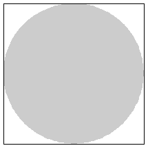 | 2. 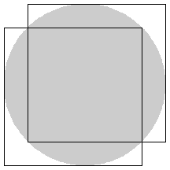 | 3. 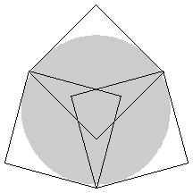 | ||
| r = 1/2 = .500 Trivial. | r = 2 - √2 = .585+ Proved by Trevor Green in August 1999. | r = .794+ Proved by Trevor Green in August 1999. |
| 4. 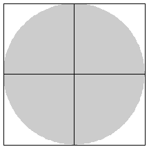 | 5. 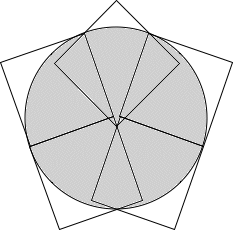 | 6. 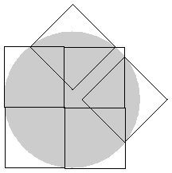 | ||
| r = 1 Proved by Trevor Green in August 1999. | r = 1.028+ Found by Maurizio Morandi in April 2009. | r = 1.126+ Found by Erich Friedman in August 1999. |
| 7. 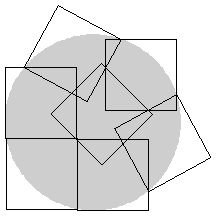 | 8. 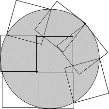 | 9. 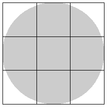 | ||
| r = 1.239+ Found by David Cantrell in July 2002. | r = 1.375+ Found by Maurizio Morandi in March 2009. | r = 3/2 =1.500 Trivial. |
| 10. 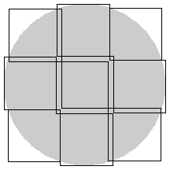 | 11. 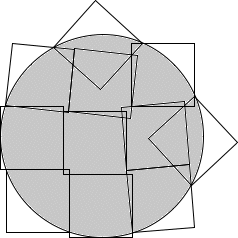 | 12. 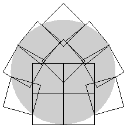 | ||
| r = 1.546+ Found by Trevor Green in August 1999. | r = 1.608+ Found by Maurizio Morandi in March 2009. | r = 1.701+ Found by David Cantrell in August 2002. |
| 13. 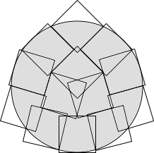 | 14. 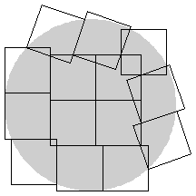 | 15. 
| ||
| r = 1.779+ Found by Maurizio Morandi in April 2009. | r = 1.883+ Found by David Cantrell in July 2002. | r = 1.991+ Found by Maurizio Morandi in April 2009. |
| 16. 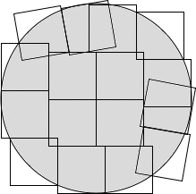 | 17. 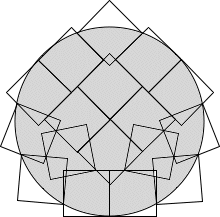 | 18. 
| ||
| r = 2.007+ Found by Maurizio Morandi in May 2009. | r = 2.042+ Found by Maurizio Morandi in June 2009. | r = 2.116+ Found by Maurizio Morandi in June 2009. |